Sports at Georgia Tech


Summary of GT Athletics
The Georgia Tech Yellow Jackets represent Georgia Tech in 15 different D1 spots: 8 men's teams and 7 women's teams. Additionally, Tech sponsors club sports for sports such as Ice Hockey.
Tech has a rich tradition of success in its sports including a couple national championships. The Football team has 4 claimed national titles (more than u(sic)ga) and Tech has an NCAA team championship in Women's Tennis.
Additionally, Tech has done a great job in producing high quality athletes from the institute such as Calvin Johnson, Chris Bosh, Mark Teixeira, and Bobby Jones.
The Georgia Tech Athletic Association, a private nonprofit organization on campus, is what runs our athletic department, and spends around $94 million yearly to keep our programs afloat.
Currently, the athletic director for Georgia Tech is Todd Stansbury, a former Georgia Tech linebacker, and has done an excellent job in revamping the programs at the school in his tenure since 2017.
Originally, Tech was part of the Southern Intercollegiate Athletic Association in 1895, then went to form the Southern Conference in 1921. After that, they along with 12 other schools split to form the Southeastern Conference (SEC) in 1932.
Then, after a disagreement with other SEC schools, Tech left to found the Metro-6 Conference in 1975, before finally arriving to their current home in the Atlantic Coast Conference (ACC) in 1978.
To learn more about the sports programs here at Tech, check out the programs in the table below, or check out the GT athletics website.
Georgia Tech's Sports
- 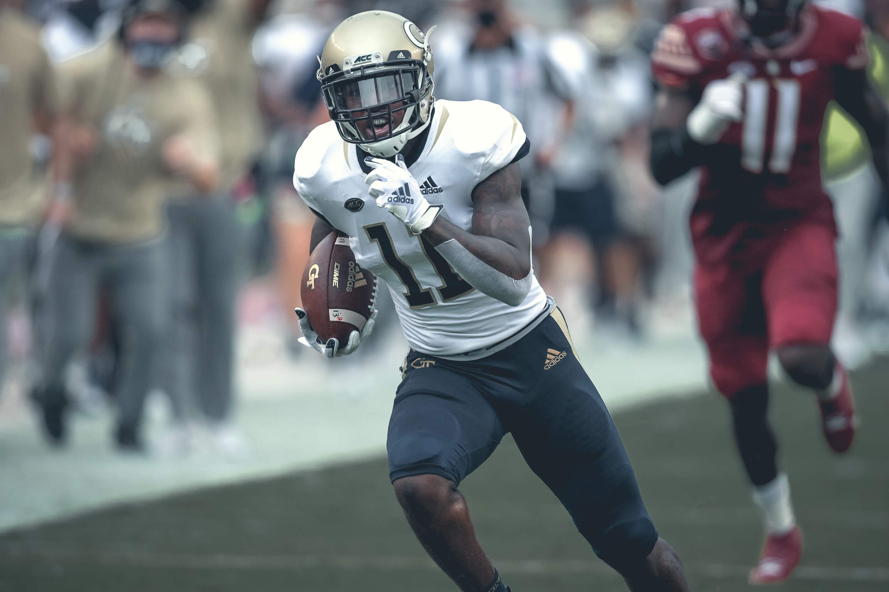
Football

Men's Basketball
- 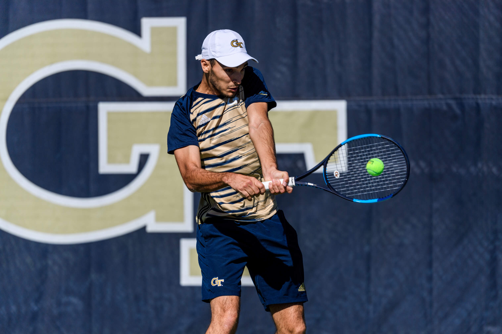
Men's Tennis
- 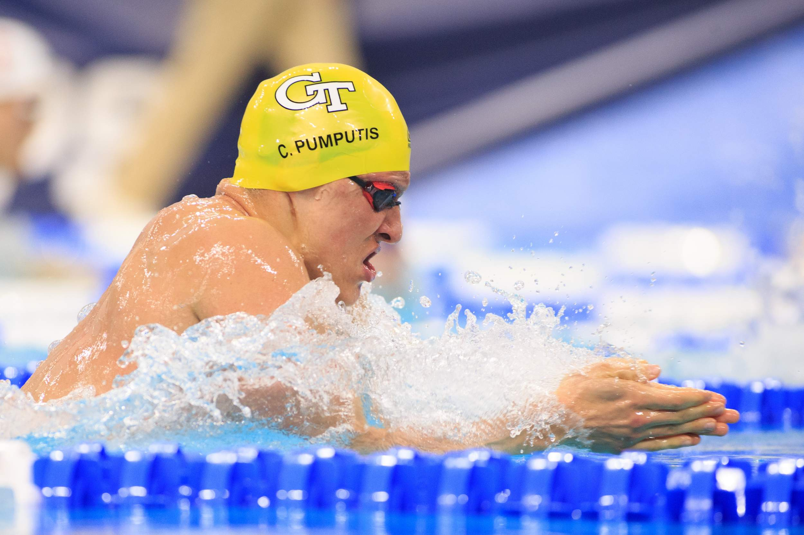
Swimming & Diving
- 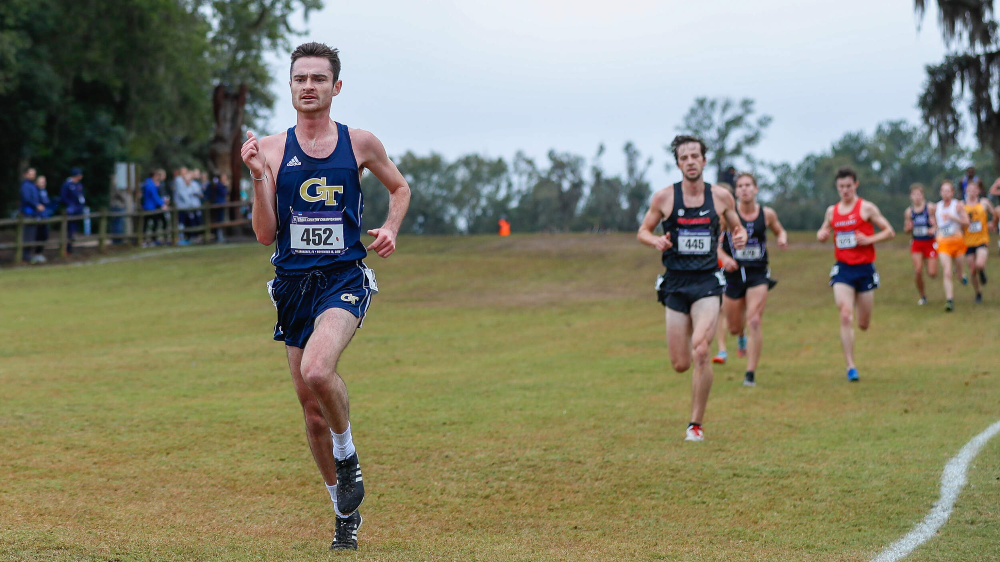
Men's Cross Country
- 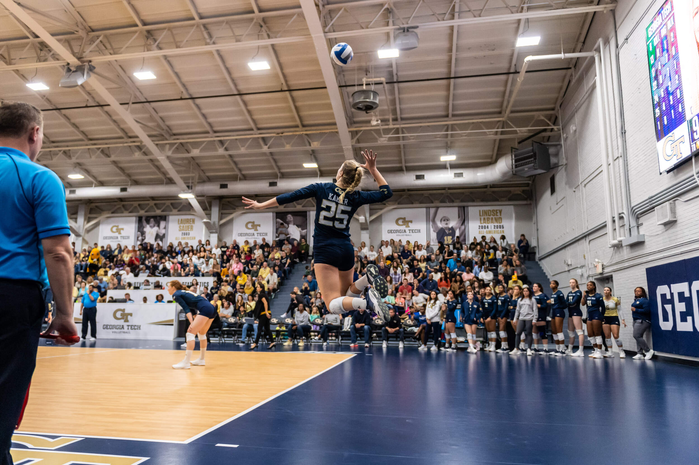
Volleyball

Women's Basketball
- 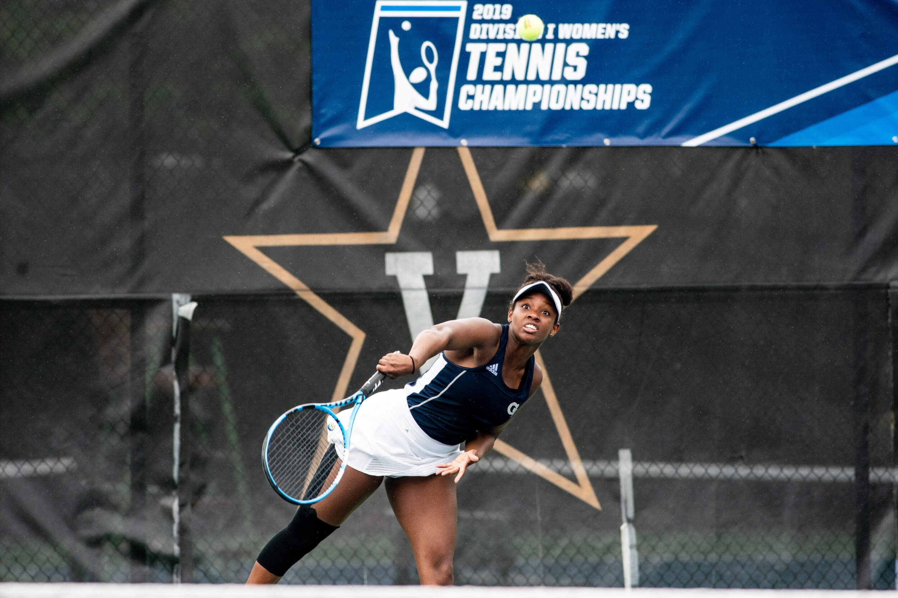
Women's Tennis
- 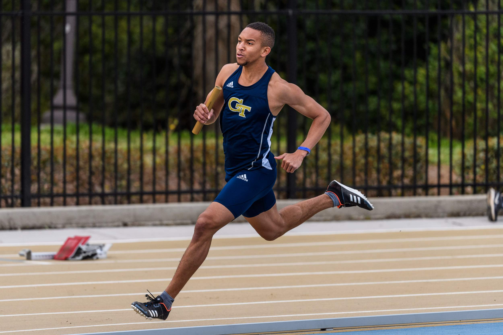
Men's Track & Field
- 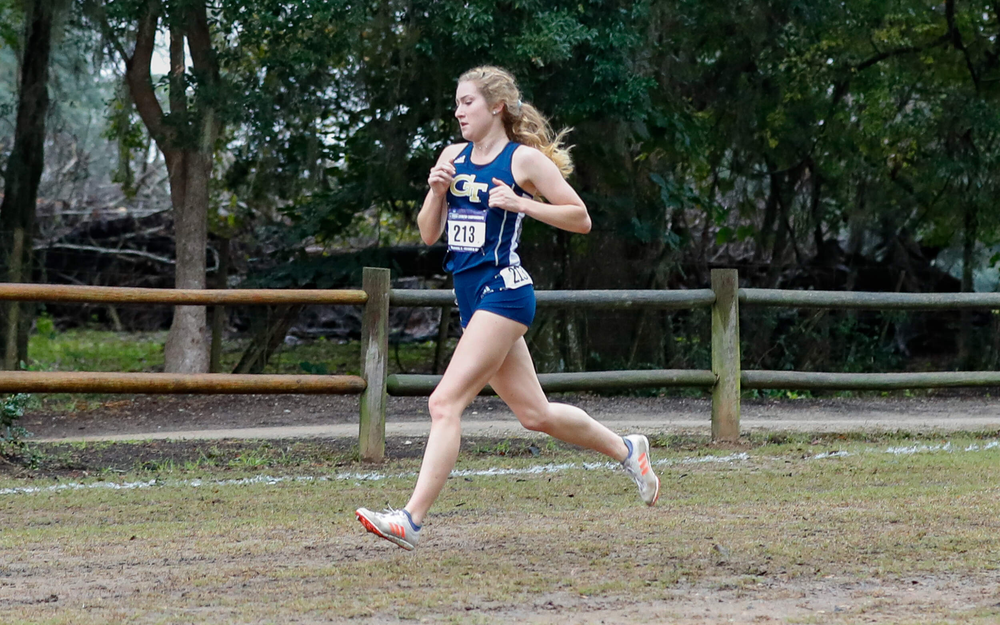
Women's Cross Country
- 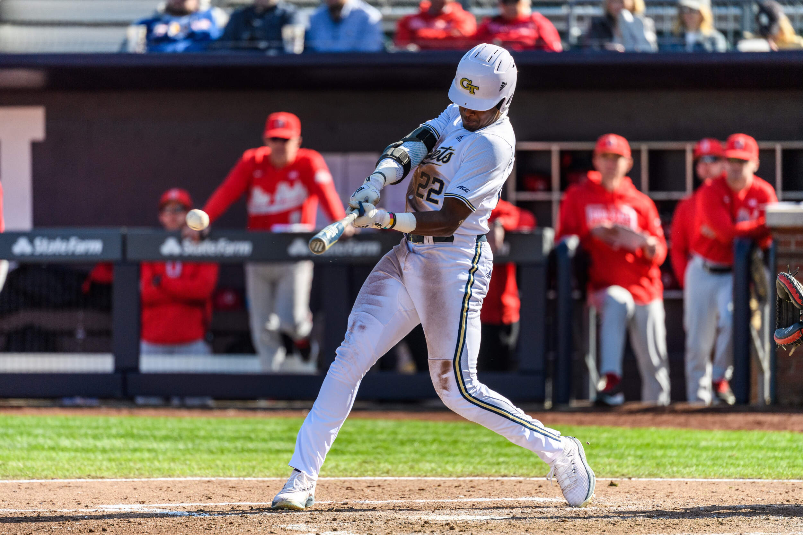
Baseball

Golf
- 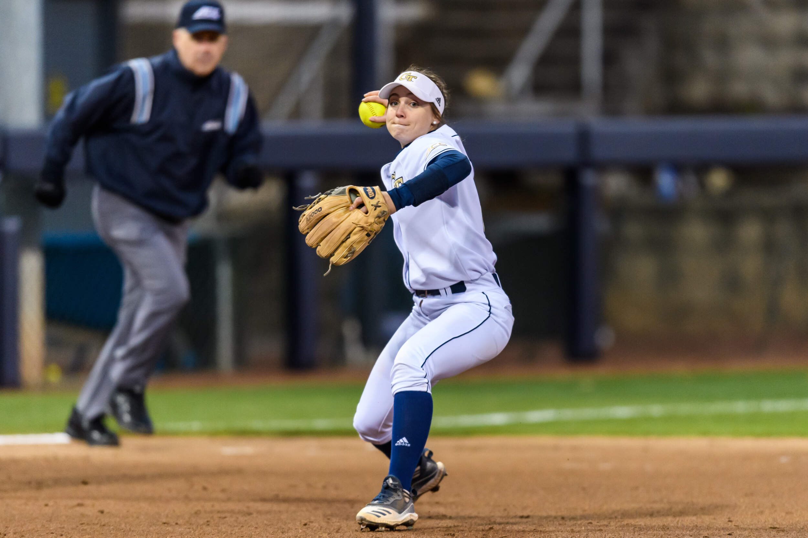
Softball
- 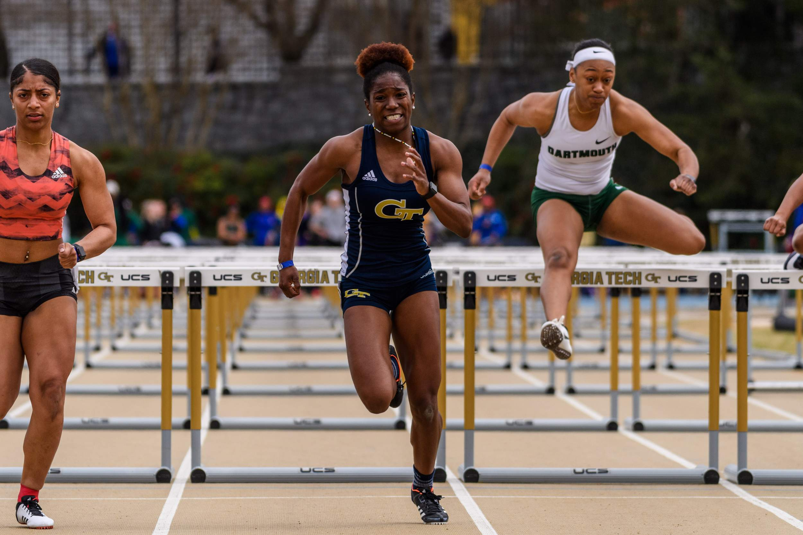
Women's Track & Field

Club Sports